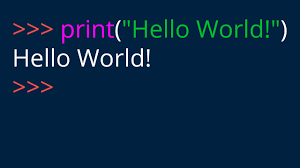
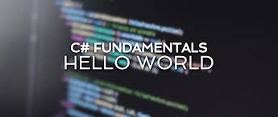

Hello world!
This is the first file in my new Git Repo.
A new line in our file!
This line is here to show how merging works.
This is how we say hello to the world

This is
ALSO
how we say hello to the world
This is another image in coming
